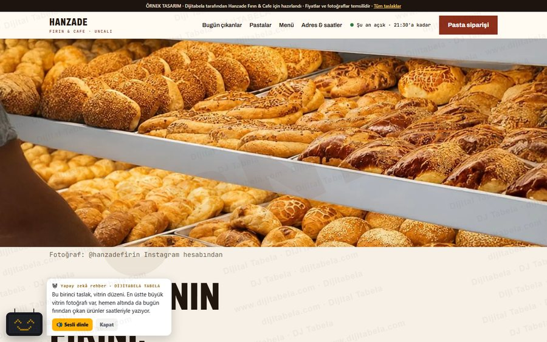
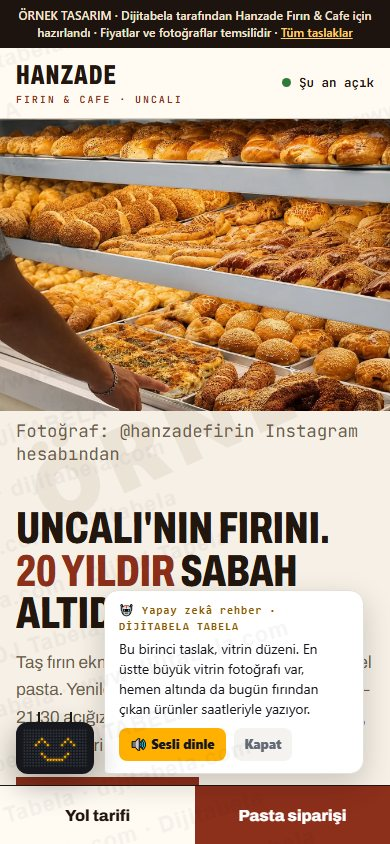
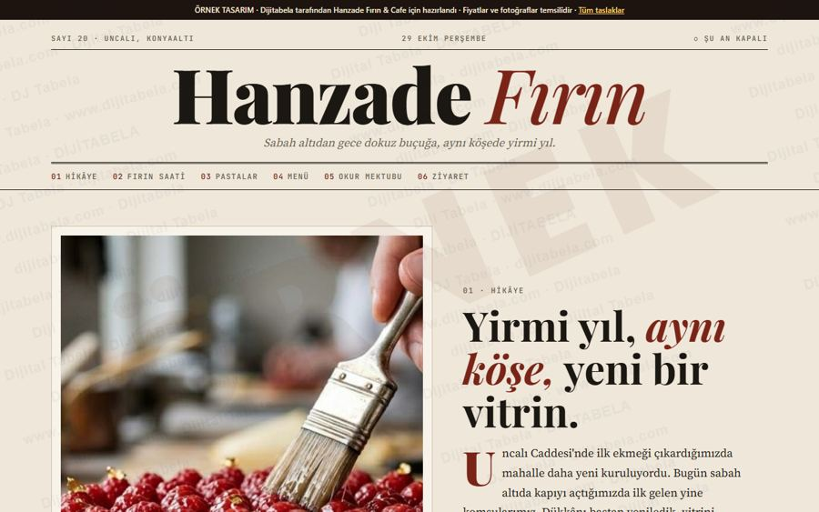
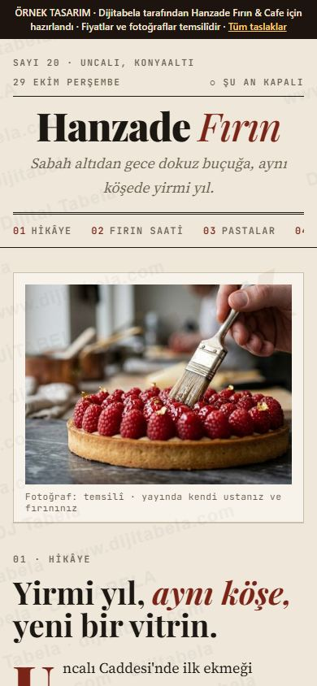
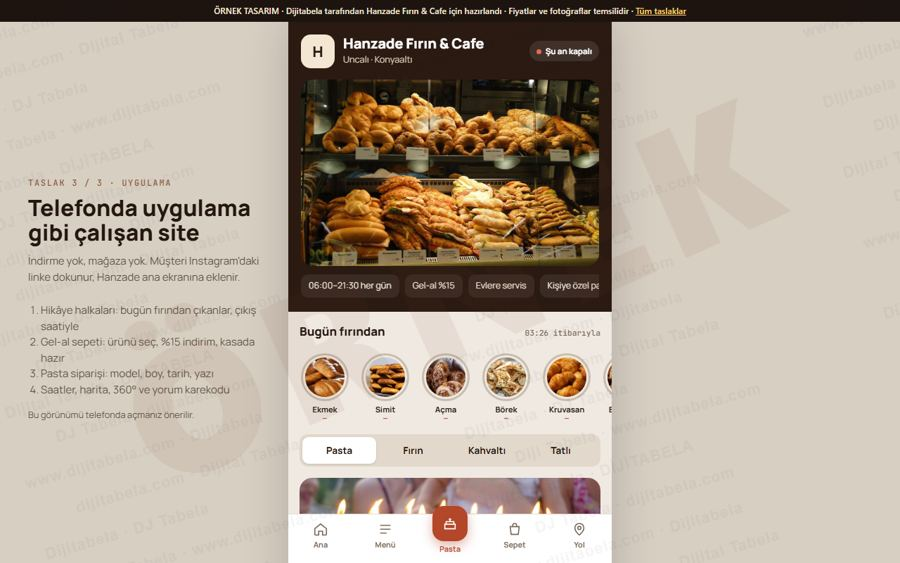
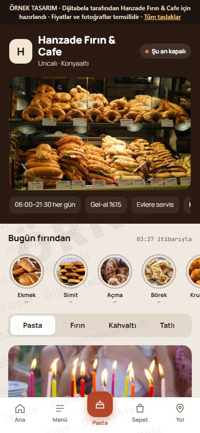
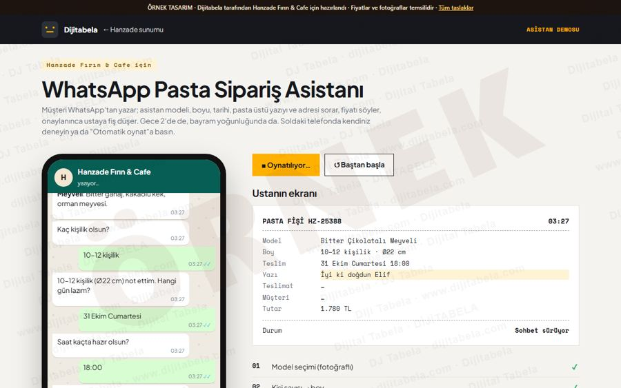

İzlenmeyi siparişe, Google'ı 5 yıldıza çeviren sistem
Videolarınız 35 bin kişiye ulaşıyor ama bu insanlar sipariş vermeden geçiyor. Biz o izleyiciyi WhatsApp'tan pasta siparişine ve Google'da 5 yıldıza çeviren sistemi kuruyoruz.
Uncalı'da 20 yıllık emek, yeni yapılan tadilat ve bölgenin en düzenli vitrini: elinizde güçlü bir dükkân var. Aşağıda internette gördüklerimizi, size özel hazırladığımız 3 çalışan web sitesi tasarımını ve WhatsApp pasta asistanının canlı demosunu bulacaksınız.
İnternette ne gördük?
Videolar 35 bin izleniyor, hesap 1.793 takipçide
İzleyen çok, takip eden ve sipariş veren az. Videolarda "yoruma PASTA yaz" ya da "WhatsApp'tan sipariş" gibi tek bir net çağrı yok; izleyeni yakalayan bir sistem kurulmamış.
4,0 puan, oysa yakınınızdaki bir fırın 4,7'de
"Konyaaltı fırın" ya da "pasta" araması yapan kişi önce yıldıza bakar. 547 yorum büyük bir sermaye; puanı 4,3'ün üstüne taşımak yeni müşteri demek.
Web sitesi yok, işletme adı yalnızca "Hanzade"
Profilde "Web sitesi ekleyin" uyarısı çıkıyor. "Hanzade Fırın" araması yapan kişi aynı adlı başka işletmelerle (döner, gıda, künefe) karşılaşıyor. Adın tabeladaki gibi "Hanzade Fırın & Cafe" olması ve profile bağlı bir sitenin olması, aramada sizi öne çıkarır.
Övülen: vitrin ve çeşit. Eleştirilen: üç konu
- Bölgenin en temiz ve düzenli teşhir alanı, geniş çeşit
- Kasada güler yüz: yorumlara sakin, özür ve çözüm içeren cevap şablonları
- Fiyat algısı: sitede açık fiyat listesi, gel-al %15 indirimi görünür
- Üretim tarihi: "Bugün fırından çıkanlar" panosu, her ürün çıkış saatiyle
Size özel 3 web sitesi tasarımı: 3 ayrı yerleşim, hepsi çalışıyor
Fotoğraflar temsilîdir (lisanslı). Siteniz yayına girerken kendi ürün ve dükkân fotoğraflarınız kullanılır. Fiyatlar örnektir.


Büyük vitrin fotoğrafı, canlı "bugün çıkanlar" tablosu, filtreli pasta vitrini ve numaralı fiyat listesi. Klasik ve net.
Canlı aç →

20 yıllık hikâyeyi anlatan dergi düzeni: fırın saati çizelgesi, kaydırmalı pasta kitabı ve kişi sayısına göre pasta hesaplayıcı.
Canlı aç →

Telefonda uygulama gibi: Instagram tarzı "bugün çıkanlar" hikâyeleri, gel-al sepeti (%15 indirim) ve alt menü.
Canlı aç →- Pasta sipariş sihirbazı: model, kişi sayısı, gün ve saat, pasta üstü yazı (canlı önizlemeli), gel-al ya da adres. Fiyat anında çıkar, sipariş WhatsApp'a ve ustanın ekranına fiş olarak düşer.
- Bugün fırından çıkanlar: ekmek, simit, börek, açma; her biri son çıkış saati ve sonraki çıkışla. "Taze mi?" sorusunu ve üretim tarihi şikâyetini kapatır.
- Şu an açık mı: 06:00–21:30 saatine göre canlı durum, bugünün satırı vurgulu.
- Google yorum karekodu: kasada, masada ve pakette. Herkese aynı bağlantı açılır, puan filtrelenmez (Google kuralına uygun).
- Harita, yol tarifi ve 360° cadde görünümü.
WhatsApp Pasta Sipariş Asistanı: canlı demo

Müşterinin gözünden: model, boy, tarih, isim yazısı, adres, fiyat ve onay. Sağda ustanın ekranına düşen fiş canlı dolar. "Otomatik oynat" ile kendi kendine ilerler.
Demoyu aç →Gece 2'de de, bayram yoğunluğunda da sipariş alır
- Telefon meşgulken kaçan pasta siparişi kalmaz
- Ustaya eksiksiz fiş: boy, yazı, saat, adres
- Instagram'dan gelen kişi tek dokunuşla siparişe geçer
- Fiyatı asistan söyler, pazarlık ve yanlış anlaşılma azalır
- Gel-al siparişlerinde %15 indirim kendiliğinden uygulanır
Demo gerçek mesaj göndermez; kurulumda sizin WhatsApp Business hattınıza bağlanır.
Paketler ve fiyatlar
Google'da Görün
- Google profilinde ad düzeltme: "Hanzade Fırın & Cafe" (kurallara uygun)
- Seçeceğiniz tasarımla web sitesi + pasta kataloğu, profile bağlı
- Ürün ve fotoğraf güncellemesi
- Kasa ve masa için yorum karekodu kartları (herkese, filtresiz)
- Sakin, özür + çözüm içeren yorum cevap şablonları
Hedef: 4,0'dan 4,3+ puana ve "Konyaaltı fırın / pasta" aramasında üst sıralara.
WhatsApp Pasta Sipariş Asistanı
- Pasta ve evlere servis siparişi 7/24
- Model, boy, tarih, isim yazısı, adres
- Fiyatı söyler, ustaya fiş düşer, size bildirim gelir
- "Açık mısınız, simit var mı" sorularına cevap
İlk ay deneme indirimi görüşülebilir.
Ayşe telefon asistanı
- (0242) 227 35 25'e gelen "açık mısınız / pasta var mı / sipariş" aramalarını karşılar
- Önce aylık arama sayınızı birlikte çıkarırız
Instagram izlenmesini siparişe çevirme
- Her videoya tek net çağrı: "Yoruma PASTA yaz → fiyat özelden"
- Yorum yazana otomatik cevap ve WhatsApp yönlendirmesi
- Haftalık "Bugün fırından çıkanlar" hikâyesi
- Influencer'a verilen paranın dönüşünü ölçen kod/link
Ödeme: %50 kapora ile başlanır, kalan teslimde. Tüm fiyatlara KDV dahil değildir; faturalı çalışırız.
İş takvimi
Google profili: ad, kategori, saatler, ürünler ve fotoğraflar
Seçtiğiniz tasarımla site ve pasta kataloğu yayında, profile bağlı
Yorum karekodu kartları kasada ve masalarda
Yorum cevap şablonları teslim; asistan kurulumu başlar
Sorularınız ve tasarım seçiminiz için arayın ya da yazın.
dijitabela.com